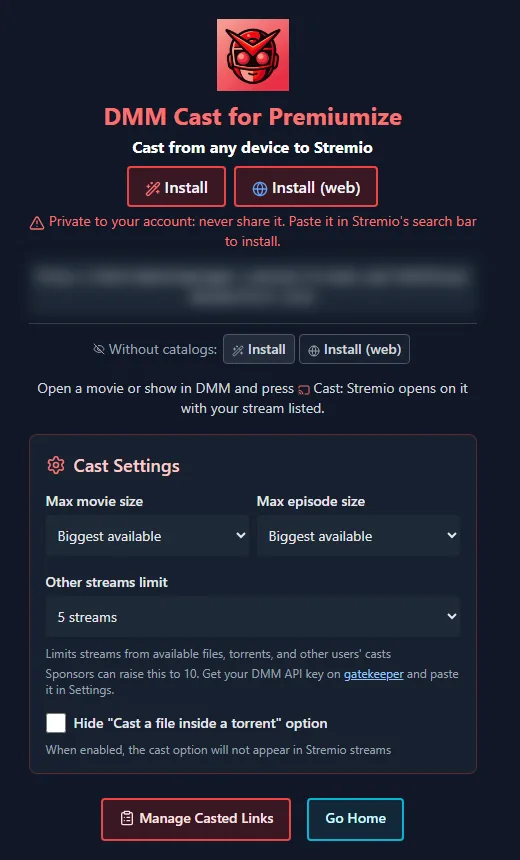
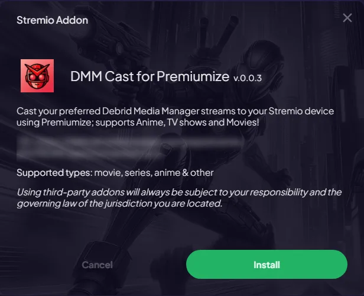
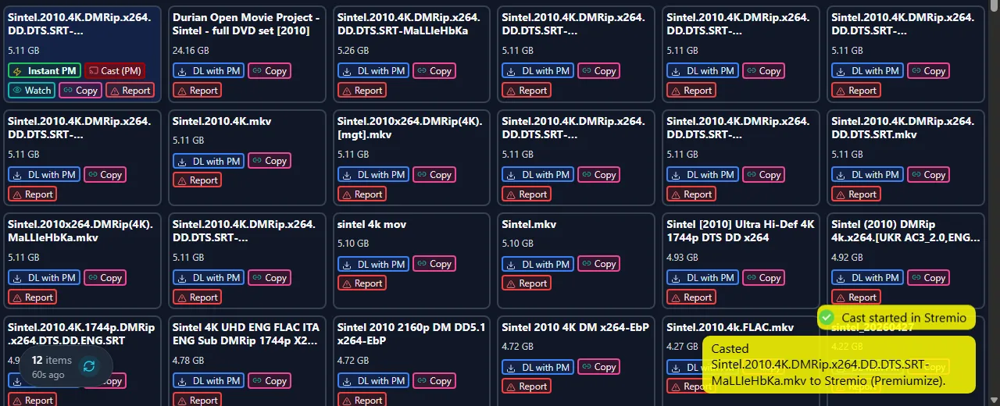
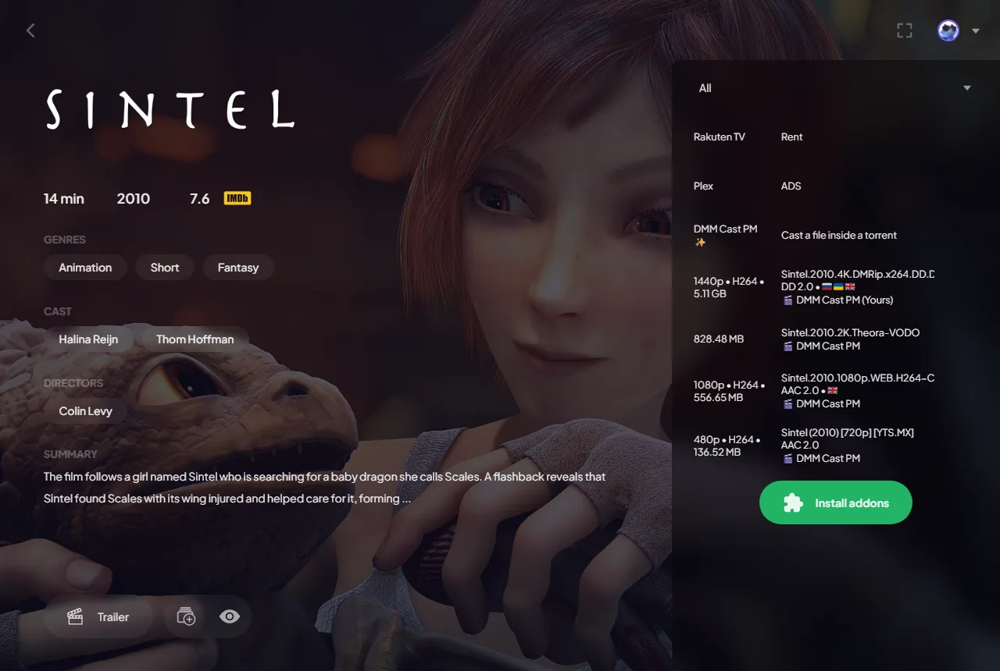

在 Stremio 中使用 DMM 与 DMM Cast
DMM Cast 是 Debrid Media Manager 的 Stremio 插件。它让 DMM 出现在 Stremio 里:你在 DMM 上选一个资源,点击 Cast,Stremio 就会把它列为一个流媒体来源,从你自己的 debrid 或 Easynews 账号播放。简单来说:在 DMM 上登录,打开你的服务商的 Cast 页面,在 Stremio 中安装插件,然后在任意电影或剧集上点 Cast。
这里的 Cast 指的是 DMM 插件。它不是 Chromecast,也不是屏幕投屏。
你需要准备
- 使用 Real-Debrid、TorBox、AllDebrid、Premiumize、Offcloud、Debrid-Link 或 Easynews 登录 DMM。
- Stremio。Stremio Web 无需 Stremio 账号也能用。
无需赞助。
设置方法
- 用你的服务商账号在 debridmediamanager.com 上登录。Easynews 在 Settings 下登录。
-
在 DMM 首页按 Cast for RD、Cast for TB 等按钮。如果登录了多个账号，会出现一行 Cast，每个服务商各有一个按钮。每个服务商都有自己的 Cast 页面：

-
按 Install (web)。Stremio Web 会打开并带上这个插件。在那里按 Install。

如果用的是其他 Stremio，复制按钮下方显示的地址，然后在 Stremio 里添加。在 Stremio Web 中的路径是 Addons → Add addon → 粘贴 → Add → Install。这个地址只属于你的账号，千万不要分享给别人。
-
回到 DMM，搜索电影或剧集并打开。你的服务商已有的资源会显示 Cast 按钮：Cast (RD)、Cast (TB)、Cast (AD)、Cast (PM)、Cast (OC) 或 Cast (DL)。按下它。DMM 会提示 Cast started in Stremio（如果是剧集，则显示 Casting succeeded. 以及投送了多少集），并尝试在你的 Stremio 应用中打开这个影片。

-
在 Stremio 中打开这个影片。你的投送会显示为 DMM Cast PM (Yours)（其他服务商则是 RD、TB 等）。点击即可播放。

在 Stremio 中还能做什么
- DMM Cast PM ✨ · Cast a file inside a torrent 会出现在每部电影和每集剧集上。点它会在 DMM 中打开这个标题，你可以从那里投送某个资源。
- 另外最多可以多出 5 个来源，来自其他人的投送，以及你的服务商已经有的资源。在 Cast 页面的 Other streams limit 下设置数量。赞助者可以把数量提高到 10 个。
- Stremio 的 Board 上会有几行：DMM PM Movies 和 DMM PM TV Shows 存放你的投送。DMM PM Library 存放你账户里的所有内容，每个条目打开后会显示其文件。Easynews 没有 Library 行。
- 不想要这些行？改为点击 Without catalogs → Install (web) 来安装插件。来源依然会显示。
- Cast 页面上的 Manage Casted Links 会列出你的投送。勾选想删除的项目（或点 Select All），然后按 Delete Selected，就能把它们从 Stremio 中移除。
- 在 Cast 页面上启用 Hide "Cast a file inside a torrent" option 会去掉 ✨ 那一行。
在 Debrid-Link 上投送，会把这个资源添加到你的账户里。如果 Debrid-Link 还没有这个资源，投送会开始一次真正的下载，并占用你当天 50 个种子额度中的一个。
出现问题时
还是搞不定？请到 Discord 上的 dmm-cast-support 论坛提问。Getting help 中说明了需要提供哪些信息。
常见问题
我能在 Stremio 中搜索 DMM 吗？
不，DMM Cast 不会在 Stremio 中添加搜索功能，Stremio 的搜索也不会显示其中的内容。请在 debridmediamanager.com 上搜索，然后点击 Cast。如果你已经在 Stremio 中打开了某个影片，✨ 行会带你跳转到 DMM 上的该影片。
能在电视、Fire TV 或手机上用吗？
投屏记录保存在 DMM 上，而不是你投屏的设备上。所有填了你插件地址的 Stremio 都能看到这些记录。用手机或电脑投屏，然后在你观看的地方的 Stremio 里选择 (Yours) 流即可。
支持哪些服务商？
Real-Debrid、TorBox、AllDebrid、Premiumize、Offcloud、Debrid-Link 和 Easynews。每个服务都有自己的 Cast 页面和独立的插件。你想在 Stremio 里用几个账户，就分别安装几个插件。
为什么 Stremio 只显示 Cast 而没有播放源？
没有为该影片选定任何资源。点击 ✨ 行，在 DMM 上选择一个版本，然后再次在 Stremio 中打开该影片。
我能在 Stremio 中播放我的整个 debrid 库吗？
是的。Stremio 的 Board 上的 DMM Library 一行会列出你账户里的所有内容（不包括 Easynews）。打开某个条目即可查看其中的文件。
需要赞助吗？
不对。对于 DMM Cast，赞助只会把 Other streams limit 从 5 提高到 10。请在 gatekeeper 上获取你的 DMM API 密钥，然后粘贴到 DMM 的 Settings 中。